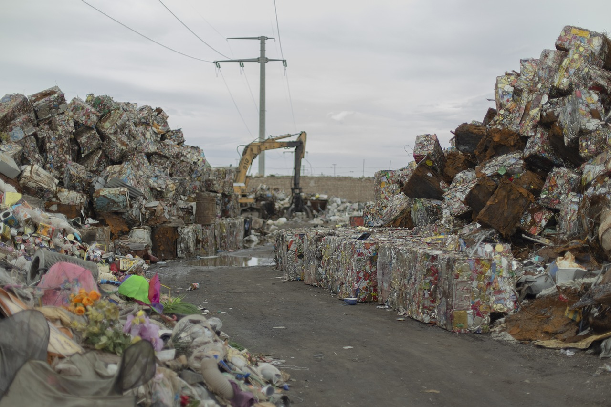
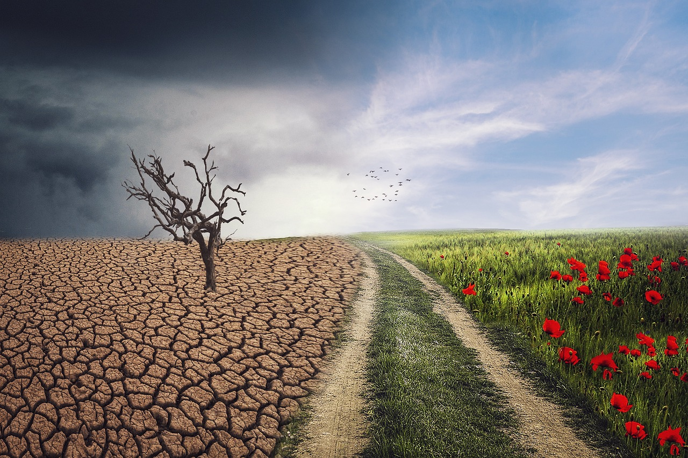

Mi a környzetvédelem?
A környezetvédelem a Föld természeti erőforrásainak és ökoszisztémáinak védelmét, megőrzését és fenntartható
kezelését jelenti.
Célja a környezet rombolásának minimalizálása, a biológiai sokféleség megőrzése, az
erőforrások fenntartható használata, és
az emberi tevékenységek által okozott káros hatások mérséklése vagy
megelőzése.
A környezetvédelem főbb területei
Légszennyezés csökkentése
A káros gázok kibocsátásának korlátozása az iparban, a közlekedésben és más területeken.

Vízvédelem
A vízforrások tisztaságának megőrzése, a szennyeződések elkerülése, és a vízkészletek fenntartható kezelése.

Hulladékgazdálkodás
A hulladék mennyiségének csökkentése, az újrahasznosítás elősegítése, valamint a veszélyes hulladékok biztonságos kezelése.
Erdő- és talajvédelem
Az erdők megőrzése, a talajerózió megelőzése, és a fenntartható mezőgazdaság támogatása.

Klímavédelem
Az éghajlatváltozás hatásainak mérséklése, az üvegházhatású gázok kibocsátásának csökkentése, és a megújuló energiaforrások használata.
